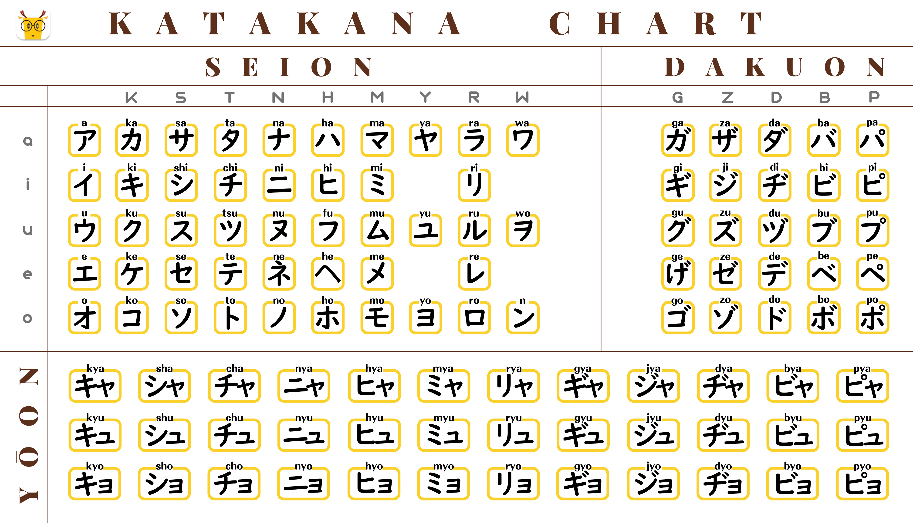

Learn about the Katakana characters and their pronunciation. Here are some examples:
Katakana Overview
Basic Characters: Katakana also consists of 46 basic characters, similar to hiragana. Each character represents a different syllable, and the structure is based on a consonant-vowel combination. For example, "カ" (ka) or "ケ" (ke).
Syllable Structure: The basic structure of katakana characters is similar to hiragana, with a consonant sound (or a vowel sound if there is no initial consonant) followed by a vowel sound.
Usage for Loanwords: Katakana is frequently used for loanwords from other languages, especially words of Western origin. For example, words like コンピュータ (konpyūta) for "computer" or レストラン (resutoran) for "restaurant" are written in katakana.
Emphasis and Names: Katakana is also employed to add emphasis or draw attention to certain words or phrases. Additionally, katakana is commonly used for writing foreign names, both personal and place names, in a Japanese context.
Typography: Katakana characters are typically more angular and straight compared to the more rounded shapes of hiragana. This distinction in appearance makes it easier to differentiate between the two syllabaries.
Learning Sequence: Similar to hiragana, learners of Japanese typically study katakana after becoming familiar with hiragana. The ability to read and write katakana is essential for a comprehensive understanding of written Japanese.
Handwriting and Print: While katakana is used extensively in print, it is less common in handwritten notes and personal communication compared to hiragana. However, it is still important to be able to write katakana characters.
Differences in Pronunciation: In some cases, katakana may be used to represent the same sounds as hiragana, but the pronunciation may differ slightly due to the influence of the writing system's historical use for foreign words.
Katakana, hiragana, and kanji collectively form the rich tapestry of the Japanese writing system. The distinct roles of each script contribute to the overall clarity and expression of the language, allowing it to convey a wide range of ideas and information. Learning katakana is an integral part of becoming proficient in reading and writing Japanese.